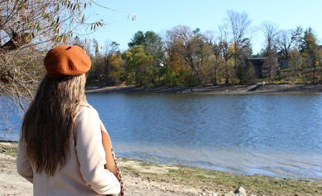
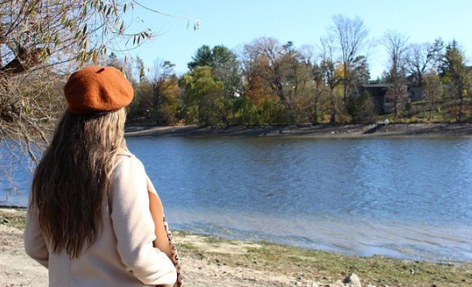

Editing Process
Importing and organizing: The first step is to import the photographs into your editing software and organize them into folders or collections. This helps you keep track of your work and makes it easier to find specific photos later on.
Basic adjustments: The next step is to make basic adjustments to the photograph, such as cropping, straightening, and adjusting exposure. This can help improve the overall composition and make the photo look more visually appealing.
Retouching: Depending on the photograph, you may need to retouch certain areas, such as removing blemishes, smoothing skin, or removing unwanted objects from the background.
Enhancements: Once you have the basic adjustments and retouching done, you can start to enhance the photo by adjusting the tone, saturation, vibrance, and other settings to create a more dramatic effect. This step can help give the photograph a unique look and feel.
Saving and exporting: Once you are happy with the final result, you can save the photograph in the desired format (such as JPEG, PNG, or TIFF) and export it for use in print or online.
Development Process
Planning: This stage involves brainstorming ideas, researching references, and sketching out rough ideas. It's important to have a clear vision of what you want to create before starting.
Sketching: Once you have a plan, you can start sketching out the details of your image. This might involve creating thumbnail sketches, or more detailed sketches to help you refine your ideas.
Refining: After you have a rough sketch, you can start refining the details, adding more accurate shapes and shading, and adjusting the composition until you're happy with the overall design.
Finishing: Once you've added color and any other final details, you can finish your picture by adding any final touches or adjustments that you feel are necessary. This might involve adding highlights, shadows, or adjusting the contrast or brightness to make the image pop.
Presentation: Finally, you can present your picture to an audience or display it in a gallery or online platform. This might involve adding a signature or watermark and framing the image.


 
